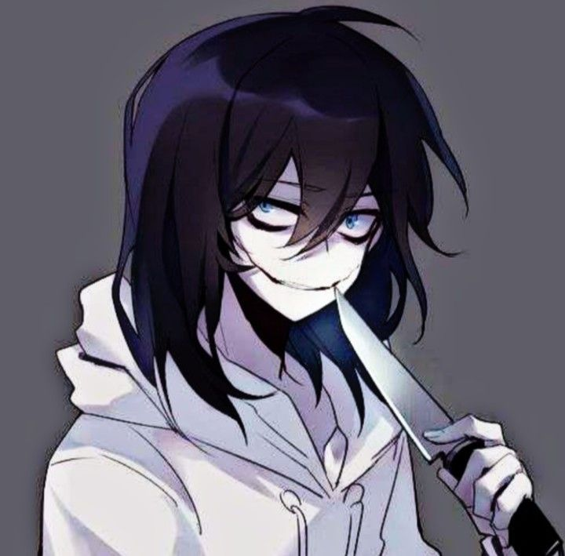
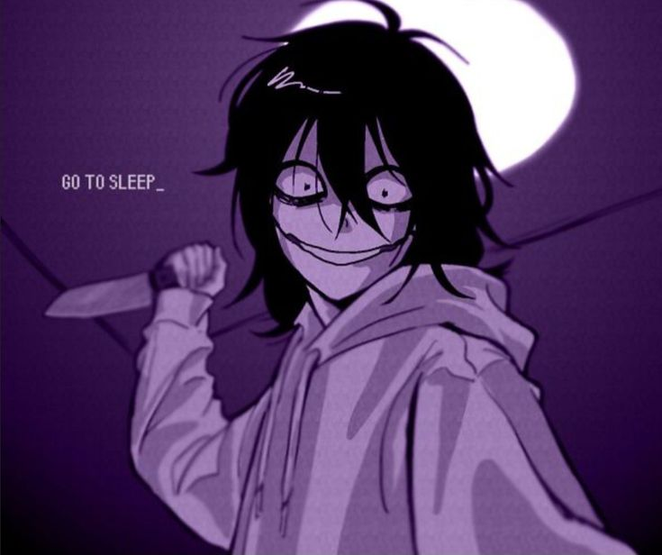
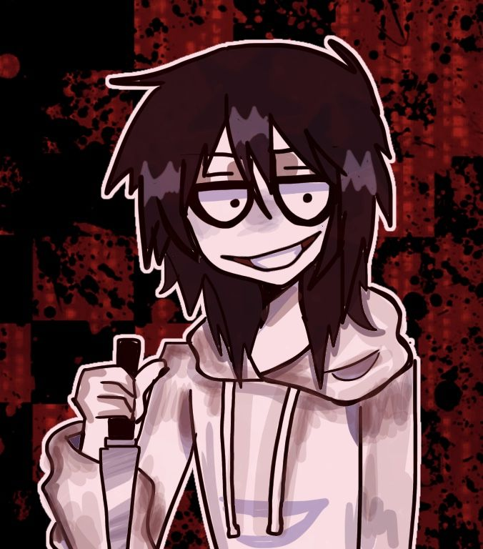
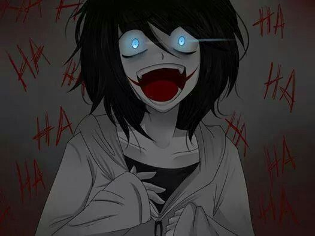

CREEPYPASTA
JEFF
THE KILLER
Jeff the Killer é um personagem fictício de terror conhecido por sua pele extremamente pálida, cabelos pretos, olhos escuros e sorriso assustador. Sua história circula na internet desde o final dos anos 2000 e apresenta um jovem que, depois de acontecimentos violentos, passa a ser retratado como um assassino em narrativas de horror.



O QUE ACONTECE?
Nas versões mais conhecidas da história, Jeff se envolve em conflitos com outros jovens e sofre ferimentos que alteram sua aparência. Depois desses acontecimentos, passa a agir de maneira violenta e a perseguir pessoas durante a noite. Em algumas versões, aproxima-se das vítimas enquanto elas dormem e pronuncia a frase “Go to sleep” antes de atacá-las.
Os detalhes variam conforme a versão da creepypasta.

CARACTERÍSTICAS
play_arrow ORIGEM
Creepypasta que ganhou popularidade em comunidades da internet no final dos anos 2000.
person PRINCIPAL PERSONAGEM
Jeff, um jovem retratado como assassino nas histórias fictícias.
skull APARÊNCIA
Pele muito pálida, cabelos pretos, olhos escuros e um sorriso largo e perturbador.
warning LOCAL
Casas, ruas desertas e bairros residenciais durante a noite.

CURIOSIDADES
- A imagem característica do personagem contribuiu para sua popularidade.
- A frase “Go to sleep” ficou associada à creepypasta.
- Existem diversas versões de sua história e de sua origem.
- O personagem inspirou desenhos, vídeos, jogos de fãs e outras histórias de terror.
